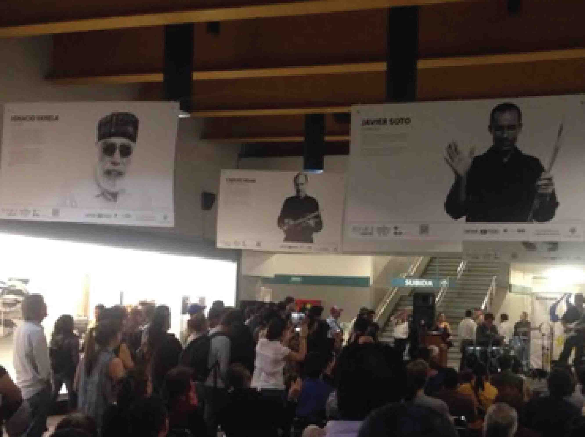
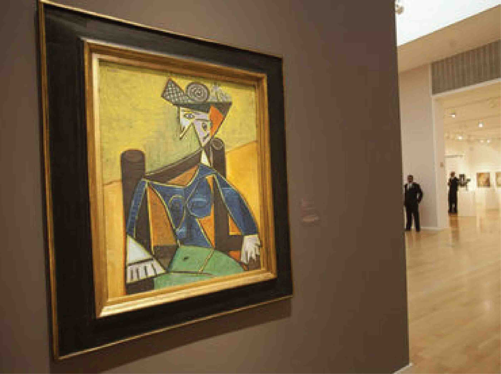
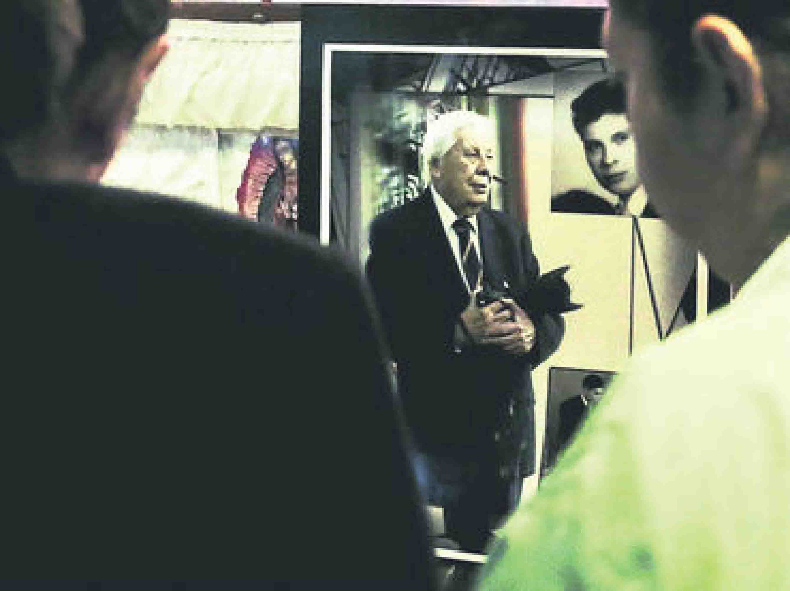

Gian Paolo Barbieri: La seduccion de la moda. El trabajo del fotografo se expone en Italia
La exposicion sin copa Jaliscience: Precursores e impulsadores del jazz, estara expuesta en la estacion Juarez del Tren Ligero esto en la segunda: La muestra recrea la vida intima y el proceso creativo a lo largo de 17 a;os del artista español y estara abierta al publico hasta el 20 de julio y esto en la tercera: En la prensa escrita de Guadalajara exiten pocos personajes como el fotoperiodista Rodolfo Rosales Lopez, testigo de los cambios de la ciudad.
Galeria

Consejos para tomar fotos de aventura
Luz de tarde tibia y un angulo de la foto extrema agregar drama de una foto de un skater a punto de caer en una pista de patinaje

Dominacion de colores
Un teleobjetivo comprime todo en una escena, incluyendo elementos tan pequeños como los copos de nieve
